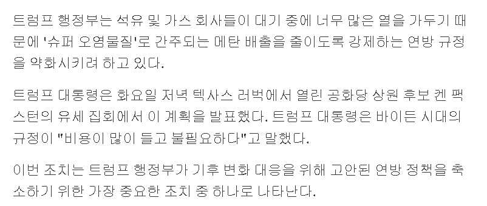

지금 배출량 조차 억제하고 있는 건데, 이제 그냥 뿜뿜하려고 한다.

지금 배출량 조차 억제하고 있는 건데, 이제 그냥 뿜뿜하려고 한다.
아니... 얜 진짜 부지런도 하네
지는 살 날 얼마 안남았다고
기후 변화는 사기다
...
저새낀 곧 가니까
암세포새끼
지구망할때 지는 죽고없음ㄱㅂㅍ
마지막을 불살라 버렷~
아주 그냥 똥을 있는대로 쳐 싸고 앉았네...
메탄가스가 이산화탄소보다 온실효과가 심각한데 온실효과로 인한 기후변화를 이해를 못 하는 새끼라
근데 미국은 브레이크가 없음?
ㄹㅇ 트럼프
하고싶은거 다하네
미국은 왕정인가봐
의회먹힘+911이후로행정부에힘이실림
메탄은 진짜 좆되는데
미국 대통령 권한이 존나게 쎄구나
80먹은 노인이 기후문제에 논한다는게 아이러니지 ㅋㅋ
늙은 미친자가
미국 민주당도 이젠 기후위기로 정치하는거 내려놓음 안먹혀서
대 럼 프
대 대 대
디거 생각나네
진짜 병신새끼 ㅋㅋ